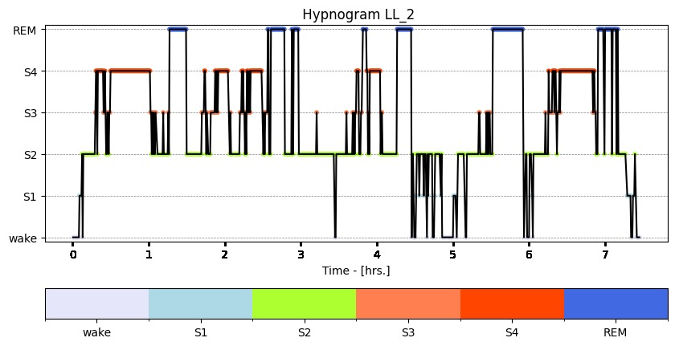
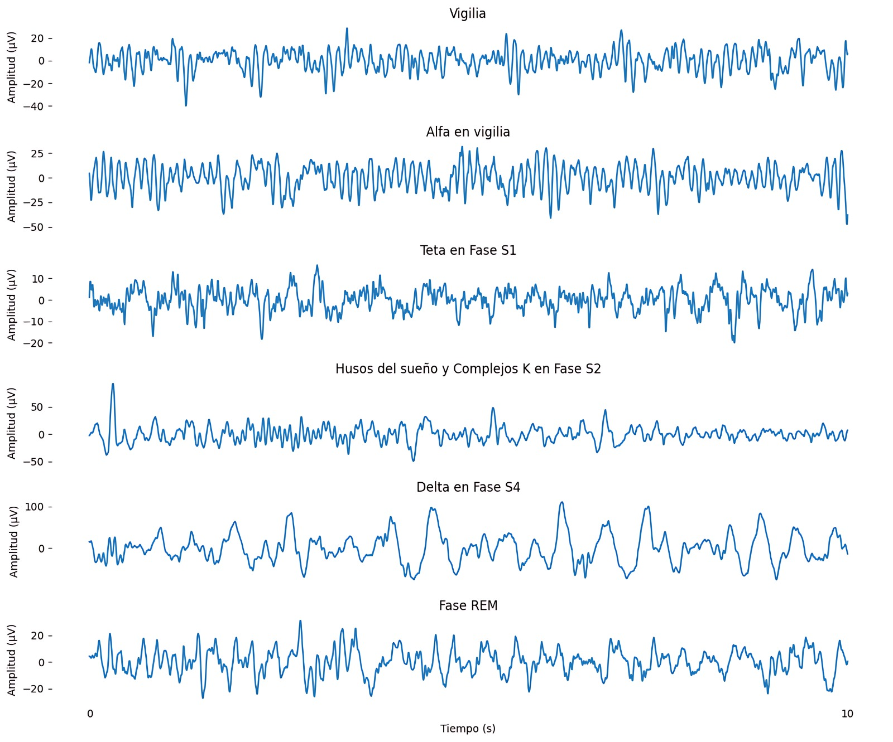

Siempre me ha costado conciliar el sueño, así que un día me pregunté si mi cerebro funcionaba diferente al de una persona sana. El insomnio es un trastorno del sueño que no solo implica pasar horas mirando al techo sin poder dormir, también afecta directamente actividades cotidianas como la memoria, la toma de decisiones, el rendimiento laboral o académico, e incluso nos hace más propensos a problemas emocionales como la depresión o la ansiedad. Dormir bien es tan esencial como alimentarnos o hidratarnos, pero, a pesar de ser un problema de salud pública grave, no existe tanta investigación que lo estudie con métodos no invasivos.

Hipnograma de un sujeto sano. Se observa la morfología de las diferentes fases del sueño.
Mi interés por este tema surge de mi curiosidad por las neurociencias y la física, especialmente por cómo esta última aporta herramientas y métricas para analizar series de tiempo. Las neurociencias buscan entender cómo funciona el sistema nervioso, desde las células individuales hasta el cerebro completo, y cómo todo esto influye en nuestro comportamiento, emociones y capacidades. Dentro de este campo, el sueño es un proceso fascinante: mientras dormimos (proceso en el que aparentemente “no ocurre nada interesante”), nuestro cerebro sigue activo, organizando recuerdos, regulando funciones corporales y manteniendo el equilibrio emocional.
Esto me motivó a investigar si existían patrones que permitieran diferenciar entre un cerebro con insomnio primario (un tipo de insomnio en el que no se encuentran causas aparentes) y uno sano, utilizando técnicas no invasivas. Para ello, utilicé registros de EEG, una herramienta que mide la actividad eléctrica del cerebro a través de pequeños sensores colocados en el cuero cabelludo. Es como “escuchar” las conversaciones que las neuronas tienen entre sí, sin necesidad de intervenciones quirúrgicas ni procedimientos dolorosos.
La red dentro de la cabeza
Cuando hablamos de “conexiones cerebrales” nos referimos a cómo diferentes regiones del cerebro se comunican entre sí. Algunas áreas pueden activarse al mismo tiempo porque trabajan juntas en una tarea, y otras pueden tener una relación más compleja, en la que una influye sutilmente en la otra. Comprender estas conexiones nos ayuda a ver el cerebro como una red, en la que no solo importa la actividad de cada región, sino también cómo interactúan. A esta red la llamamos red funcional.
En mi análisis, apliqué técnicas para detectar estas conexiones relevantes, observando qué regiones se activaban de manera sincronizada. También utilicé métodos más sofisticados para encontrar patrones menos evidentes, aquellos que no se ven a simple vista pero que podrían ser clave para diferenciar a las personas con insomnio de aquellas que duermen bien.

Señales electroencefalográficas registradas durante la noche en un sujeto sano.
Con toda esa información, entrené un modelo de aprendizaje automático, una rama de la inteligencia artificial que permite a las computadoras aprender a reconocer patrones por sí mismas a partir de datos, sin que les digamos exactamente qué buscar. Es un poco como enseñarle a un amigo a reconocer una imagen: después de observarla muchas veces, puede identificarla incluso si ahora es más borrosa o si tiene algún tipo de filtro.
El método específico que utilicé se llama árbol de decisión. Funciona como una serie de preguntas encadenadas: “¿Esta conexión es alta o baja? Si es alta, sigo por aquí; si es baja, voy por allá”. Así, va dividiendo la información hasta llegar a una conclusión. Por ejemplo, en los test de internet para saber qué personaje de una serie eres, se buscan características relevantes sobre ti que se parezcan a las de algún personaje específico (que sería el patrón en los datos). En este caso, el patrón distingue si el cerebro analizado corresponde a una persona con insomnio o a una persona sin este trastorno.
Los resultados preliminares me sorprendieron mucho: parece que las conexiones cerebrales que encontré sí muestran diferencias claras entre ambas condiciones. Esto no significa que ya tengamos una herramienta de diagnóstico lista, pero sí que estamos viendo indicios de que el insomnio deja una huella detectable en el cerebro.
Un paso más hacia entender el sueño
Aunque todavía queda mucho trabajo por hacer, me emociona pensar en lo que puede venir después. Profundizar en la comprensión del sueño con ayuda de la inteligencia artificial no solo es un reto científico, sino también una oportunidad para mejorar la salud y el bienestar de muchas personas.
Esto no reemplaza un diagnóstico médico ni cura el insomnio, pero es un paso hacia una comprensión más completa de cómo dormimos, y de cómo la ciencia y la tecnología pueden ayudarnos a cuidar mejor de nuestro cerebro.
Sobre la autora
Valeria Svetlhana Gutiérrez López
Soy estudiante de licenciatura en Inteligencia Artificial apasionada por las neurociencias y las series de tiempo. Actualmente desarrollo mi tesis en el estudio de EEG y sueño, me gustaría aprender más física para ampliar mi visión. Me encanta la divulgación científica y he participado como tallerista, jurado en la feria estatal de ciencias PAUTA, y expositora de pósters en diversos eventos académicos. He realizado dos veranos científicos, uno de ellos publicado en la revista digital de mi universidad, y he asistido a una Escuela Nacional de Supercómputo en SLP. Creo firmemente que la ciencia cobra verdadero valor cuando se comparte.